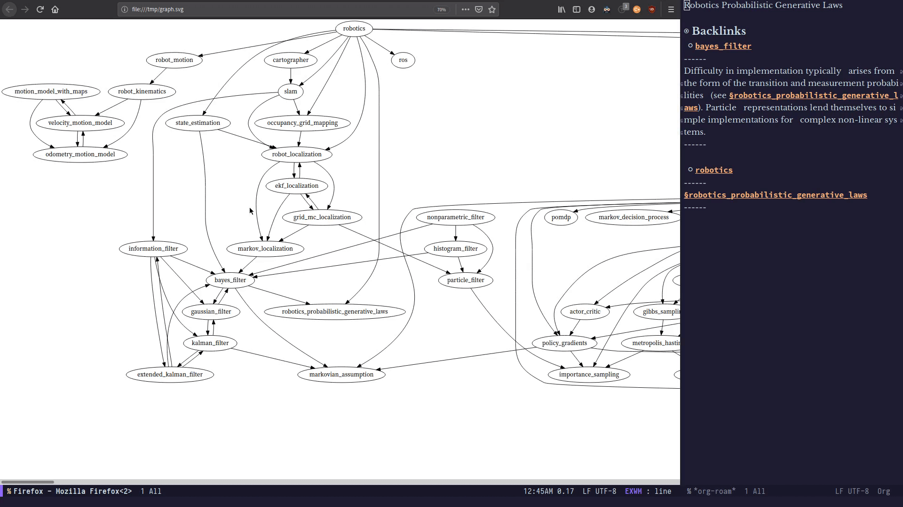
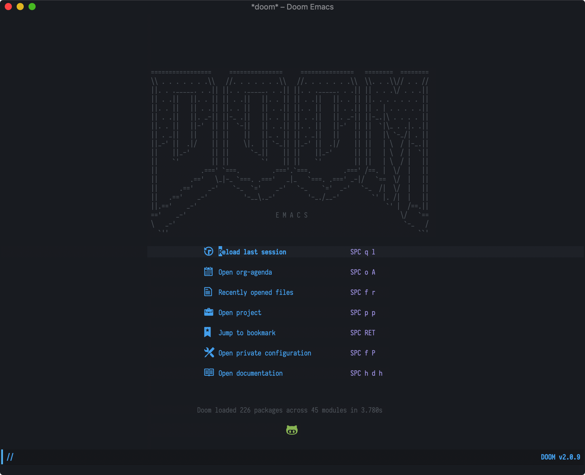

<!DOCTYPE HTML>
<html>
<head>
  <meta charset="utf-8">
  
  <title>Emacs笔记(一)——安装与配置Doom Emacs | Shigaro</title>
  <meta name="author" content="minyez">
  
  <meta name="description" content="minyez&#39;s blog on life, science and programming">
  
  
  <meta name="viewport" content="width=device-width, initial-scale=1, maximum-scale=1">

  <meta property="og:title" content="Emacs笔记(一)——安装与配置Doom Emacs"/>
  <meta property="og:site_name" content="Shigaro"/>

  
    <meta property="og:image" content=""/>
  

  
  
    <link href="/assets/images/favicon/icon.png" rel="icon">
  
  
  <link rel="stylesheet" href="/css/bootstrap.min.css" media="screen" type="text/css">
  <link rel="stylesheet" href="/css/bootstrap.css" media="screen" type="text/css">
  <link rel="stylesheet" href="/css/font-awesome.css" media="screen" type="text/css">
  <link rel="stylesheet" href="/css/style.css" media="screen" type="text/css">
  <link rel="stylesheet" href="/css/responsive.css" media="screen" type="text/css">
  <link rel="stylesheet" href="/css/highlight.css" media="screen" type="text/css">
  <link rel="stylesheet" href="/css/google-fonts.css" media="screen" type="text/css">
  <!--[if lt IE 9]><script src="//html5shiv.googlecode.com/svn/trunk/html5.js"></script><![endif]-->

  <script src="/js/jquery-2.0.3.min.js"></script>

  <!-- analytics -->
  
<script>
  (function(i,s,o,g,r,a,m){i['GoogleAnalyticsObject']=r;i[r]=i[r]||function(){
  (i[r].q=i[r].q||[]).push(arguments)},i[r].l=1*new Date();a=s.createElement(o),
  m=s.getElementsByTagName(o)[0];a.async=1;a.src=g;m.parentNode.insertBefore(a,m)
  })(window,document,'script','//www.google-analytics.com/analytics.js','ga');
  ga('create', 'UA-111612868-1', 'auto');
  ga('send', 'pageview');
</script>


<script async src="//busuanzi.ibruce.info/busuanzi/2.3/busuanzi.pure.mini.js">
</script>


</head>

 <body 
>
  <nav id="main-nav" class="navbar navbar-default navbar-fixed-top" role="navigation">
  <div class="container">
    <button type="button" class="navbar-header navbar-toggle" data-toggle="collapse" data-target=".navbar-collapse">
      <span class="sr-only">Toggle navigation</span>
      <span class="icon-bar"></span>
      <span class="icon-bar"></span>
      <span class="icon-bar"></span>
    </button>
    <a class="navbar-brand" href="/"></a>
    <div class="collapse navbar-collapse nav-menu">
      <ul class="nav navbar-nav">
        

        <!-- Categories -->
        
        <li>
          <a href="/" title="Shigaro's Home"
            style="font-weight: normal; font-family: Calibri,Arial; font-size: 18px">
            <i class="fa fa-bank"></i>Home
          </a>
        </li>
        
        

        <!-- Categories -->
        
        <!-- Archives -->
        <li>
          <a href="/archives" title="All the articles."
            style="font-weight: normal; font-family: Calibri,Arial; font-size:     18px">
            <i class="fa fa-archive"></i>Archives
          </a>
        </li>
        
        

        <!-- Categories -->
        
        <!-- Tags -->
        <li>
          <a href="/tags" title="All the tags."
            style="font-weight: normal; font-family: Calibri,Arial; font-size:     18px">
            <i class="fa fa-tags"></i>Tags
          </a>
        </li>
        
        

        <!-- Categories -->
        
        <li class="dropdown">
          <a href="/categories" class="dropdown-toggle" data-toggle="dropdown" title="All the categories."
            style="font-weight: normal; font-family: Calibri,Arial; font-size:     18px">
            <i class="fa fa-folder"></i>Categories
            <b class="caret"></b>
          </a>
          <ul class="dropdown-menu">
            <li class="divider"></li>
            <li><a href="/categories" style="font-size: 20px; font-family: 'Calibri Light',Arial">All
                Categories</a><span></span></li>
            <li class="divider"></li>
            
            <li><a href="/categories/Software/"
                style="font-size: 15px; font-family: 微软雅黑">Software<span></span></a></li>
            
            <li><a href="/categories/Programming/"
                style="font-size: 15px; font-family: 微软雅黑">Programming<span></span></a></li>
            
            <li><a href="/categories/Algorithm/"
                style="font-size: 15px; font-family: 微软雅黑">Algorithm<span></span></a></li>
            
            <li><a href="/categories/Life/"
                style="font-size: 15px; font-family: 微软雅黑">Life<span></span></a></li>
            
            <li><a href="/categories/Research/"
                style="font-size: 15px; font-family: 微软雅黑">Research<span></span></a></li>
            
            <li class="divider"></li>
          </ul>
        </li>
        
        

        <!-- Categories -->
        
        <li>
          <a href="/about" title="About me."
            style="font-weight: normal; font-family: Calibri,Arial; font-size: 18px">
            <i class="fa fa-user"></i>About
          </a>
        </li>
        
        
      </ul>
    </div>
  </div> <!-- container -->
</nav>
<div class="clearfix"></div>
  <div class="container">
  	<div class="content">
    	 


	
		<div class="page-header">		
			<h1> Emacs笔记(一)——安装与配置Doom Emacs</h1>
		</div>		
	


<div class="row post">
	<!-- cols -->
	
	<div id="top_meta"></div>
	<div class="col-md-9">
	

	<!-- content -->
	<div class="mypage">		
	  		

	  <link rel="stylesheet" type="text/css" href="/css/hint.min.css"><div class="alert alert-warning"><i class="fa fa-bell  float-left"></i>  <p>记录从零开始的Emacs. 目标是熟练地使用Org-roam编辑个人维基!</p>
</div>
<a id="more"></a>
<h2 id="前言"><a href="#前言" class="headerlink" title="前言"></a>前言</h2><p>因缘巧合, 今日我在搜索转化$\rm\LaTeX$到MathML的解决方案时, 偶然看到了<a href="https://github.com/org-roam/org-roam">Org-roam</a>项目. 它的个人知识库构建和展示方式引起了我很大的兴趣.</p>
<p>Org-roam基于Emacs的Org-mode, 后者是Emacs中纯文本笔记管理+GTD+写作系统. “Org”指代organize, “roam”则取自<a href="https://roamresearch.com/" target="_blank" rel="noopener">Roam Research</a>. Org-roam采纳了<a href="https://zettelkasten.de/" target="_blank" rel="noopener">Zettelkasten笔记法</a>的思想.<sup id="fnref:1"><a href="#fn:1" rel="footnote"><span class="hint--top hint--error hint--medium hint--rounded hint--bounce" aria-label="Zettelkasten是一个德语词, 对应英语slip box, 类似于图书馆存放索引卡的盒子.">[1]</span></a></sup> 这种方法认为知识不是层级化的而是扁平化的, 重要的是知识之间的关联. 这种关联通过笔记中用<code>[[...]]</code>包围的关键词建立. Org-roam能对这种连接进行可视化.</p>
<p><figure class="null"><figcaption>Graph view, from Org-roam GitHub site</figcaption></figure></p>
<p>相比较其他Zettelkasten实现, Org-roam的特点是</p>
<ol>
<li>完全免费开源, 数据库本地存储而不是封存托管在企业云端数据库.</li>
<li>基于Org-mode纯文本系统, 可利用Emacs生态扩展.</li>
<li>配置复杂, 学习曲线陡峭.</li>
<li><del>Emacs与Vim水火不容</del></li>
</ol>
<p>一直以来也接触过挺多笔记记录的方式, Agenda, Bear, OneNote, Notion, 甚至是本地文件夹, 但总是觉得不得劲. 现在又多了这样一种选择, 自然还是想试一下. 然而作为Vim用户, 第一个应该跨过的关卡应该是Emacs的基本使用. 现在就说道说道吧.</p>
<h2 id="安装"><a href="#安装" class="headerlink" title="安装"></a>安装</h2><h3 id="Doom-Emacs"><a href="#Doom-Emacs" class="headerlink" title="Doom Emacs"></a>Doom Emacs</h3><p>从安装开始. 为免去Emacs基本设置, 在<a href="https://www.youtube.com/watch?v=Lg61ocfxk3c" target="_blank" rel="noopener">Matt Williams</a>的推荐下安装<a href="https://github.com/d12frosted/homebrew-emacs-plus">emacs-plus</a>和<a href="https://github.com/hlissner/doom-emacs">Doom Emacs</a>. 用homebrew安装Emacs</p>
<figure class="highlight shell"><table><tr><td class="gutter"><pre><span class="line">1</span><br><span class="line">2</span><br><span class="line">3</span><br><span class="line">4</span><br></pre></td><td class="code"><pre><span class="line">brew tap d12frosted/emacs-plus</span><br><span class="line"><span class="meta">#</span><span class="bash"> 若出现403错误, 在前面加上all_proxy=socks5://127.0.0.1:1086</span></span><br><span class="line">brew install emacs-plus@27 --with-modern-icon-cg433n</span><br><span class="line">ln -s /usr/local/opt/emacs-plus/Emacs.app /Applications/Emacs.app</span><br></pre></td></tr></table></figure>
<p>完成后再从GitHub安装Doom Emacs</p>
<figure class="highlight shell"><table><tr><td class="gutter"><pre><span class="line">1</span><br><span class="line">2</span><br></pre></td><td class="code"><pre><span class="line">git clone --depth 1 https://github.com/hlissner/doom-emacs ~/.emacs.d</span><br><span class="line">~/.emacs.d/bin/doom install</span><br></pre></td></tr></table></figure>
<p>此时命令行打开Emacs, 可以看到下面这样十分炫酷的界面. 这跟我印象里面一个大白框UI迥然不同.</p>
<p><figure class="null"><figcaption>Doom Emacs UI</figcaption></figure></p>
<p>Doom Emacs安装完后, 编辑<code>~/.doom.d/</code>下的<code>init.el</code>文件打开或关闭一些Doom模块. 一些模块包含可选功能, 需要通过<code>+</code>指定, 例如打开<a href="https://orgmode.org/" target="_blank" rel="noopener">Org-mode</a>的可选功能 (<span class="label label-info">Q</span>如何检查一个包有哪些可选功能?)</p>
<figure class="highlight lisp"><table><tr><td class="gutter"><pre><span class="line">1</span><br><span class="line">2</span><br><span class="line">3</span><br><span class="line">4</span><br><span class="line">5</span><br><span class="line">6</span><br></pre></td><td class="code"><pre><span class="line">(<span class="name">doom!</span> <span class="symbol">:lang</span></span><br><span class="line">  (<span class="name">org</span> +brain</span><br><span class="line">       +dragdrop</span><br><span class="line">       +gnuplot</span><br><span class="line">       +jupyter)      <span class="comment">; organize your plain life in plain text</span></span><br><span class="line">  )</span><br></pre></td></tr></table></figure>
<p>在<code>~/.doom.d/packages.el</code>下用<code>package!</code>命令指定安装ELPA/MELPA上的插件包,<sup id="fnref:2"><a href="#fn:2" rel="footnote"><span class="hint--top hint--error hint--medium hint--rounded hint--bounce" aria-label="ELPA: 全称Emacs Lisp Package Archive, Emacs默认的软件包存储库. MELPA = Milkypostman ELPA">[2]</span></a></sup> 例如</p>
<figure class="highlight lisp"><table><tr><td class="gutter"><pre><span class="line">1</span><br><span class="line">2</span><br><span class="line">3</span><br><span class="line">4</span><br><span class="line">5</span><br></pre></td><td class="code"><pre><span class="line"><span class="comment">;; 安装ELPA或者MELPA上的包</span></span><br><span class="line">(<span class="name">package!</span> markdown-mode)</span><br><span class="line"><span class="comment">;; 从GitHub仓库安装最新版markdown-mode</span></span><br><span class="line">(<span class="name">package!</span> markdown-mode</span><br><span class="line"> <span class="symbol">:recipe</span> (<span class="symbol">:host</span> github <span class="symbol">:repo</span> jrblevin/markdown-mode))</span><br></pre></td></tr></table></figure>
<p>设置完后运行</p>
<figure class="highlight shell"><table><tr><td class="gutter"><pre><span class="line">1</span><br></pre></td><td class="code"><pre><span class="line">~/.emacs.d/bin/doom sync</span><br></pre></td></tr></table></figure>
<p>以应用两个文件的变化. 如果遇到安装问题, 可在<code>packages.el</code>中注释掉对应代码, 命令行执行</p>
<figure class="highlight shell"><table><tr><td class="gutter"><pre><span class="line">1</span><br></pre></td><td class="code"><pre><span class="line">doom purge</span><br></pre></td></tr></table></figure>
<p>卸载程序包, 再反注释掉, 重新安装即可.</p>
<h3 id="Org-roam"><a href="#Org-roam" class="headerlink" title="Org-roam"></a>Org-roam</h3><p>Org-roam的安装可以采用<code>+</code>方式安装(<a href="https://orgroam.slack.com/archives/CV160S8EL/p1590857012127400" target="_blank" rel="noopener">slack讨论</a>)</p>
<figure class="highlight lisp"><table><tr><td class="gutter"><pre><span class="line">1</span><br><span class="line">2</span><br><span class="line">3</span><br></pre></td><td class="code"><pre><span class="line">(<span class="name">doom!</span> <span class="symbol">:lang</span></span><br><span class="line">  (<span class="name">org</span> +roam)</span><br><span class="line">  )</span><br></pre></td></tr></table></figure>
<p>也可以在<code>packags.el</code>中加入</p>
<figure class="highlight lisp"><table><tr><td class="gutter"><pre><span class="line">1</span><br><span class="line">2</span><br></pre></td><td class="code"><pre><span class="line">(<span class="name">package!</span> org-roam)</span><br><span class="line">(<span class="name">package!</span> company-org-roam) <span class="comment">;org-roam相关的代码补全</span></span><br></pre></td></tr></table></figure>
<p>安装. 随后在<code>config.el</code>中用<code>use-package!</code>函数配置</p>
<figure class="highlight lisp"><table><tr><td class="gutter"><pre><span class="line">1</span><br><span class="line">2</span><br><span class="line">3</span><br><span class="line">4</span><br><span class="line">5</span><br><span class="line">6</span><br><span class="line">7</span><br><span class="line">8</span><br><span class="line">9</span><br><span class="line">10</span><br><span class="line">11</span><br><span class="line">12</span><br><span class="line">13</span><br><span class="line">14</span><br></pre></td><td class="code"><pre><span class="line">(<span class="name">use-package!</span> org-roam</span><br><span class="line">  <span class="symbol">:commands</span> (<span class="name">org-roam-insert</span> org-roam-find-file org-roam)</span><br><span class="line">  <span class="symbol">:init</span></span><br><span class="line">  (<span class="name">setq</span> org-roam-directory <span class="string">"~/Documents/SelfDevelopment/org-roam/"</span>)</span><br><span class="line">  (<span class="name">setq</span> org-roam-graph-viewer <span class="string">"/usr/bin/open"</span>)</span><br><span class="line">  (<span class="name">map!</span> <span class="symbol">:leader</span></span><br><span class="line">  <span class="symbol">:prefix</span> <span class="string">"r"</span></span><br><span class="line">  <span class="symbol">:desc</span> <span class="string">"Org-Roam-Insert"</span> <span class="string">"i"</span> #'org-roam-insert</span><br><span class="line">  <span class="symbol">:desc</span> <span class="string">"Org-Roam-Find"</span>   <span class="string">"/"</span> #'org-roam-find-file</span><br><span class="line">  <span class="symbol">:desc</span> <span class="string">"Org-Roam-Buffer"</span> <span class="string">"r"</span> #'org-roam)</span><br><span class="line">  <span class="symbol">:config</span></span><br><span class="line">  (<span class="name">org-roam-mode</span> <span class="number">+1</span>))</span><br><span class="line"><span class="comment">;(add-to-list 'exec-path' "/usr/local/Cellar/sqlite/3.32.1/bin/sqlite3");用macOS自带</span></span><br><span class="line">(<span class="name">add-hook</span> 'after-init-hook 'org-roam-mode)</span><br></pre></td></tr></table></figure>
<p>随后打开Emacs, <code>M-x org-roam-find-file</code>或<code>SPC r /</code>, 会检查<code>org-roam-directory</code>下的所以org文件. 输出文件名进行编辑或者新建</p>
<p><figure class="null"><figcaption> </figcaption></figure></p>
<p>编辑完后<code>C-c C-c</code>保存. 对于config中不了解的函数, 可以输入<code>SPC(空格) h f</code>来查询.</p>
<p>更进一步的Org-mode, Org-roam配置和使用过程将会在下一篇文章中记录. 在本文接下来部分中仅涉及Emacs编辑和指令的基本使用.</p>
<h2 id="Emacs使用"><a href="#Emacs使用" class="headerlink" title="Emacs使用"></a>Emacs使用</h2><p><a href="https://www.youtube.com/watch?v=rCMh7srOqvw&amp;list=PLhXZp00uXBk4np17N39WvB80zgxlZfVwj" target="_blank" rel="noopener">Zaiste</a>制作了一系列非常好的Youtube视频介绍Doom Emacs和Org-mode的使用, 这里的记录基本上是练习他的Doom视频内容的整理.</p>
<h3 id="文件操作"><a href="#文件操作" class="headerlink" title="文件操作"></a>文件操作</h3><p>Dired模式下可以对文件夹与文件进行操作.</p>
<table>
<thead>
<tr>
<th>Key</th>
<th>功能</th>
</tr>
</thead>
<tbody>
<tr>
<td><code>-</code>/<code>RET</code></td>
<td>进入上层/子文件夹</td>
</tr>
<tr>
<td><code>+</code>/<code>d x</code></td>
<td>新建/删除文件夹</td>
</tr>
<tr>
<td><code>o</code></td>
<td>排序</td>
</tr>
<tr>
<td><code>M</code></td>
<td>修改文件权限</td>
</tr>
<tr>
<td><code>O</code></td>
<td>修改文件owner</td>
</tr>
<tr>
<td><code>m</code>/<code>u</code></td>
<td>选择/反选文件</td>
</tr>
<tr>
<td><code>R</code></td>
<td>重命名/移动文件</td>
</tr>
</tbody>
</table>
<h3 id="常用键位和命令"><a href="#常用键位和命令" class="headerlink" title="常用键位和命令"></a>常用键位和命令</h3><table>
<thead>
<tr>
<th>Key</th>
<th>功能</th>
</tr>
</thead>
<tbody>
<tr>
<td><code>SPC .</code></td>
<td>打开或创建文件 (在文本编辑模式下直接回车, 相当于Vim的<code>:q</code>)</td>
</tr>
<tr>
<td><code>SPC f r</code></td>
<td>打开最近文件</td>
</tr>
<tr>
<td><code>SPC o i</code></td>
<td>在iTerm中打开当前文件夹</td>
</tr>
<tr>
<td>修饰键<code>C</code></td>
<td>Mac上为Ctrl键</td>
</tr>
<tr>
<td>修饰键<code>M</code></td>
<td>Mac上为Alt键 (在Doom中如果是第一个输入, CMD键也可以)</td>
</tr>
<tr>
<td>修饰键<code>s</code></td>
<td>Mac上为CMD键</td>
</tr>
<tr>
<td><code>M-x shell</code></td>
<td>在Emacs中打开shell(全屏)</td>
</tr>
<tr>
<td><code>SPC o T</code></td>
<td>在Emacs中打开vterm(全屏)</td>
</tr>
<tr>
<td><code>SPC o t</code></td>
<td>在Emacs中弹出vterm小窗</td>
</tr>
</tbody>
</table>
<p>如果想将vterm的默认shell设为zsh需要在<code>config.el</code>中加入</p>
<figure class="highlight lisp"><table><tr><td class="gutter"><pre><span class="line">1</span><br><span class="line">2</span><br><span class="line">3</span><br><span class="line">4</span><br></pre></td><td class="code"><pre><span class="line"><span class="comment">;; set zsh to default shell of vterm</span></span><br><span class="line">(<span class="name">use-package!</span> vterm</span><br><span class="line">  <span class="symbol">:config</span></span><br><span class="line">  (<span class="name">setq</span> vterm-shell <span class="string">"zsh"</span>))</span><br></pre></td></tr></table></figure>
<p>此时可以用<code>SPC o T</code>打开vterm, 使用的是zsh.</p>
<h3 id="缓冲区和窗口操作"><a href="#缓冲区和窗口操作" class="headerlink" title="缓冲区和窗口操作"></a>缓冲区和窗口操作</h3><p>和Vim类似, 打开文件时, Emacs会打开一个缓冲区(buffer), 载入当前文件的所有内容. 所有编辑都在buffer中进行. 但buffer不必一定是文件, 它也可以是shell, 或者Dired文件树等等.</p>
<table>
<thead>
<tr>
<th>Key</th>
<th>功能</th>
</tr>
</thead>
<tbody>
<tr>
<td><code>SPC b N</code></td>
<td>新建缓冲区</td>
</tr>
<tr>
<td><code>CMD-n</code></td>
<td></td>
</tr>
<tr>
<td><code>SPC b k</code></td>
<td>杀死当前缓冲区</td>
</tr>
<tr>
<td><code>CMD-k</code></td>
<td></td>
</tr>
<tr>
<td><code>SPC b b</code></td>
<td>切换工作区缓冲区</td>
</tr>
<tr>
<td>或<code>SPC ,</code></td>
<td></td>
</tr>
<tr>
<td><code>SPC b B</code></td>
<td>切换全局缓冲区</td>
</tr>
<tr>
<td>或<code>SPC &lt;</code></td>
<td></td>
</tr>
<tr>
<td><code>C-w v</code></td>
<td>水平复制缓冲区到新窗口</td>
</tr>
<tr>
<td><code>C-w s</code></td>
<td>垂直复制缓冲区到新窗口</td>
</tr>
<tr>
<td><code>C-w w</code></td>
<td>转到下一个缓冲区窗口</td>
</tr>
<tr>
<td><code>C-w h/j/k/l</code></td>
<td>Vi式窗口转移</td>
</tr>
<tr>
<td><code>C-w q</code></td>
<td>关闭窗口</td>
</tr>
<tr>
<td><code>C-w &gt;/&lt;</code></td>
<td>向右/左扩展窗口</td>
</tr>
<tr>
<td><code>C-w +/-</code></td>
<td>向上/下扩展窗口</td>
</tr>
<tr>
<td><code>C-w =</code></td>
<td>使所有窗口等宽等高</td>
</tr>
</tbody>
</table>
<h3 id="文本编辑命令"><a href="#文本编辑命令" class="headerlink" title="文本编辑命令"></a>文本编辑命令</h3><p>这里文本编辑想表达的是类似Vim中文本操作键位和command mode下的命令(<code>:</code>). 好在Doom Emacs将许多Vim与Emacs命令绑定在了一起, 省去了学习Emacs原生编辑操作的麻烦. 但是Domm Emacs额外提供了许多方便的编辑命令</p>
<table>
<thead>
<tr>
<th>Key</th>
<th>功能</th>
</tr>
</thead>
<tbody>
<tr>
<td><code>C-x k</code></td>
<td>关闭buffer但不保存, 类似Vim <code>:q!</code>. 如果直接输入<code>:q</code>将会关闭整个Emacs</td>
</tr>
<tr>
<td><code>g s SPC STR</code></td>
<td>Avy搜索<code>STR</code>所在位置, 跳转</td>
</tr>
<tr>
<td><code>g s SPC STR x</code></td>
<td>Avy搜索<code>STR</code>所在位置, 跳转并剪切</td>
</tr>
<tr>
<td><code>g s SPC STR i</code></td>
<td>Avy搜索<code>STR</code>所在位置, 跳转并提供ispell修改意见</td>
</tr>
</tbody>
</table>
<h3 id="Markdown编辑和预览"><a href="#Markdown编辑和预览" class="headerlink" title="Markdown编辑和预览"></a>Markdown编辑和预览</h3><p>markdown文件的文本渲染和快速编辑可以使用<a href="https://jblevins.org/projects/markdown-mode/" target="_blank" rel="noopener">markdown-mode</a>. <a href="https://blog.bitsandbobs.net/blog/emacs-markdown-live-preview/" target="_blank" rel="noopener">Markus Opitz</a>基于<code>simple-httpd</code>包实现了一个HTTP服务器实时预览的功能. 编辑命令可参考这个<a href="https://cheatography.com/xaon/cheat-sheets/emacs-markdown-mode/" target="_blank" rel="noopener">Cheatsheet</a>.</p>
<h2 id="Troubleshooting"><a href="#Troubleshooting" class="headerlink" title="Troubleshooting"></a>Troubleshooting</h2><h3 id="GitHub图标显示不正常"><a href="#GitHub图标显示不正常" class="headerlink" title="GitHub图标显示不正常"></a>GitHub图标显示不正常</h3><p>安装完后打开Doom Emacs, 首页上的GitHub图标显示有可能<a href="https://github.com/hlissner/doom-emacs/issues/724">不正常</a>, 此时需要在Emacs下安装<code>all-the-icons</code>.</p>
<figure class="highlight lisp"><table><tr><td class="gutter"><pre><span class="line">1</span><br></pre></td><td class="code"><pre><span class="line">M-x all-the-icons-install-fonts</span><br></pre></td></tr></table></figure>
<p>如果出现403错误, 可以用<a href="https://blog.fazero.me/2015/08/31/%E5%88%A9%E7%94%A8proxychains%E5%9C%A8%E7%BB%88%E7%AB%AF%E4%BD%BF%E7%94%A8socks5%E4%BB%A3%E7%90%86/" target="_blank" rel="noopener">proxychains-ng</a>和SS解决</p>
<figure class="highlight shell"><table><tr><td class="gutter"><pre><span class="line">1</span><br></pre></td><td class="code"><pre><span class="line">proxychains4 emacs</span><br></pre></td></tr></table></figure>
<h3 id="Package-cl-is-deprecated警告"><a href="#Package-cl-is-deprecated警告" class="headerlink" title="Package cl is deprecated警告"></a><code>Package cl is deprecated</code>警告</h3><p>在打开Doom Emacs后底部会出现这一警告. 原因是在Emacs 24后<code>cl</code>程序包已经被<code>cl-lib</code>取代, 而部分依赖于<code>cl</code>的包(如<a href="https://github.com/jrblevin/deft/issues/77#issue-616735753">deft</a>)未相应更新. 目前除了等待源码更新外, 没有好的解决办法.</p>
<h3 id="新建文档时安装PDF-tools出错"><a href="#新建文档时安装PDF-tools出错" class="headerlink" title="新建文档时安装PDF-tools出错"></a>新建文档时安装PDF-tools出错</h3><p>首次用<code>M-X org-roam-find-file</code>创建新文件, 会弹出build epdfinfo的请求, 确定后自动安装pdf-tools. 此时出现了build failed的情况, 主要错误信息是</p>
<figure class="highlight shell"><table><tr><td class="gutter"><pre><span class="line">1</span><br><span class="line">2</span><br></pre></td><td class="code"><pre><span class="line">configure: error: cannot find necessary  poppler-private header (see README.org)</span><br><span class="line">Build failed.  ;o(</span><br></pre></td></tr></table></figure>
<p>解决办法参考这个<a href="https://github.com/politza/pdf-tools/issues/480#issuecomment-472223334">issue comment</a>, 从Homebrew安装pdf-tools</p>
<figure class="highlight shell"><table><tr><td class="gutter"><pre><span class="line">1</span><br><span class="line">2</span><br></pre></td><td class="code"><pre><span class="line">brew tap dunn/homebrew-emacs</span><br><span class="line">brew install --HEAD pdf-tools</span><br></pre></td></tr></table></figure>
<p>然后在packages.el中加入</p>
<figure class="highlight lisp"><table><tr><td class="gutter"><pre><span class="line">1</span><br></pre></td><td class="code"><pre><span class="line">(<span class="name">package!</span> pdf-tools)</span><br></pre></td></tr></table></figure>
<p>重新打开Emacs新建文件, 不需要重新build epdfinfo了.</p>
<h2 id="参考资料"><a href="#参考资料" class="headerlink" title="参考资料"></a>参考资料</h2><p>Master Emacs in 21 Days: <a href="http://book.emacs-china.org/" target="_blank" rel="noopener">http://book.emacs-china.org/</a></p>
<p>Emacs Key Bindings: <a href="https://caiorss.github.io/Emacs-Elisp-Programming/Keybindings.html" target="_blank" rel="noopener">https://caiorss.github.io/Emacs-Elisp-Programming/Keybindings.html</a></p>
<p><a href="http://emacslife.com/read-lisp-tweak-emacs/beginner-3-make-things-more-convenient.html" target="_blank" rel="noopener">How can I customize Emacs to make things more convenient?</a></p>
<div id="footnotes"><hr><div id="footnotelist"><ol style="list-style: none; padding-left: 0; margin-left: 40px"><li id="fn:1"><span style="display: inline-block; vertical-align: top; padding-right: 10px; margin-left: -40px">1.</span><span style="display: inline-block; vertical-align: top; margin-left: 10px;">Zettelkasten是一个德语词, 对应英语slip box, 类似于图书馆存放索引卡的盒子.<a href="#fnref:1" rev="footnote"> ↩</a></span></li><li id="fn:2"><span style="display: inline-block; vertical-align: top; padding-right: 10px; margin-left: -40px">2.</span><span style="display: inline-block; vertical-align: top; margin-left: 10px;">ELPA: 全称Emacs Lisp Package Archive, Emacs默认的软件包存储库. MELPA = Milkypostman ELPA<a href="#fnref:2" rev="footnote"> ↩</a></span></li></ol></div></div>	  
	</div>

    
	<div>
  	<center>
	<div class="pagination">
<ul class="pagination">
	 
				
    	<li class="prev"><a href="/2020/07/01/macos-float-window/" class="alignleft prev"><i class="fa fa-arrow-circle-o-left"></i>Prev</a></li>
  		

        <li><a href="/archives"><i class="fa fa-archive"></i>Archive</a></li>

		
		   <li class="next"><a href="/2020/06/30/hexo-2-update-time/" class="alignright next">Next<i class="fa fa-arrow-circle-o-right"></i></a></li>         
        
	
</ul>
</div>

    </center>
	</div>
    
	
    <!-- bdshare -->
    
        

        

    

	<!-- comment -->
    
<section id="comment">
  <h2 class="title">Comments</h2>

  
<div id="disqus_thread"></div>
<script>
/**
*  RECOMMENDED CONFIGURATION VARIABLES: EDIT AND UNCOMMENT THE SECTION BELOW TO INSERT DYNAMIC VALUES FROM YOUR PLATFORM OR CMS.
*  LEARN WHY DEFINING THESE VARIABLES IS IMPORTANT: https://disqus.com/admin/universalcode/#configuration-variables*/
/*
var disqus_config = function () {
this.page.url = PAGE_URL;  // Replace PAGE_URL with your page's canonical URL variable
this.page.identifier = PAGE_IDENTIFIER; // Replace PAGE_IDENTIFIER with your page's unique identifier variable
};
*/
(function() { // DON'T EDIT BELOW THIS LINE
var d = document, s = d.createElement('script');
s.src = 'https://shigaro.disqus.com/embed.js';
s.setAttribute('data-timestamp', +new Date());
(d.head || d.body).appendChild(s);
})();
</script>
<noscript>Please enable JavaScript to view the <a href="https://disqus.com/?ref_noscript">comments powered by Disqus.</a></noscript>
  
</section>


	</div> <!-- col-md-9/col-md-12 -->
		
	
	<div id="side_meta">
		<div class="col-md-3" id="post_meta"> 

	<!-- date -->
	
	<div class="meta-widget">
	<i class="fa fa-clock-o"></i>
	2020-07-01 created
	</div>
	
		
    	<div class="meta-widget">
    	<i class="fa fa-pencil"></i>
    	2020-07-02 last modified
    	</div>
    	
    
	

	<!-- page view by busuanzi -->
	
	<div class="meta-widget">
	<span id="busuanzi_container_page_pv">
	<i class="fa fa-eye"></i>
	<span id="busuanzi_value_page_pv"></span> views
	</span>
	</div>
	

	<!-- post word count -->
	
	<div class="meta-widget">
	<i class="fa fa-tachometer"></i>
	<span class="post-count">2k</span> words
	</div>
	

	<!-- categories -->
    
	<div class="meta-widget">
	<a data-toggle="collapse" data-target="#categorys"><i class="fa fa-folder"></i></a>	
    <ul id="categorys" class="tag_box list-unstyled collapse in">
          
  <li>
    <li><a href="/categories/Software/">Software<span class="badge">24</span></a></li>
  </li>

    </ul>
	</div>
	

	<!-- tags -->
	
	<div class="meta-widget">
	<a data-toggle="collapse" data-target="#tags"><i class="fa fa-tags"></i></a>		  
    <ul id="tags" class="tag_box list-unstyled collapse in">	  
	    
  <li><a href="/tags/Emacs/">Emacs<span class="badge">2</span></a></li> <li><a href="/tags/Org-roam/">Org-roam<span class="badge">1</span></a></li> <li><a href="/tags/macOS/">macOS<span class="badge">4</span></a></li>

    </ul>
	</div>
		

	<!-- toc -->
	<div class="meta-widget">
	
	   <a data-toggle="collapse" data-target="#toc"><i class="fa fa-bars"></i></a>
	   <div id="toc" class="toc collapse in">
			<ol class="toc-article"><li class="toc-article-item toc-article-level-2"><a class="toc-article-link" href="#前言"><span class="toc-article-text">前言</span></a></li><li class="toc-article-item toc-article-level-2"><a class="toc-article-link" href="#安装"><span class="toc-article-text">安装</span></a><ol class="toc-article-child"><li class="toc-article-item toc-article-level-3"><a class="toc-article-link" href="#Doom-Emacs"><span class="toc-article-text">Doom Emacs</span></a></li><li class="toc-article-item toc-article-level-3"><a class="toc-article-link" href="#Org-roam"><span class="toc-article-text">Org-roam</span></a></li></ol></li><li class="toc-article-item toc-article-level-2"><a class="toc-article-link" href="#Emacs使用"><span class="toc-article-text">Emacs使用</span></a><ol class="toc-article-child"><li class="toc-article-item toc-article-level-3"><a class="toc-article-link" href="#文件操作"><span class="toc-article-text">文件操作</span></a></li><li class="toc-article-item toc-article-level-3"><a class="toc-article-link" href="#常用键位和命令"><span class="toc-article-text">常用键位和命令</span></a></li><li class="toc-article-item toc-article-level-3"><a class="toc-article-link" href="#缓冲区和窗口操作"><span class="toc-article-text">缓冲区和窗口操作</span></a></li><li class="toc-article-item toc-article-level-3"><a class="toc-article-link" href="#文本编辑命令"><span class="toc-article-text">文本编辑命令</span></a></li><li class="toc-article-item toc-article-level-3"><a class="toc-article-link" href="#Markdown编辑和预览"><span class="toc-article-text">Markdown编辑和预览</span></a></li></ol></li><li class="toc-article-item toc-article-level-2"><a class="toc-article-link" href="#Troubleshooting"><span class="toc-article-text">Troubleshooting</span></a><ol class="toc-article-child"><li class="toc-article-item toc-article-level-3"><a class="toc-article-link" href="#GitHub图标显示不正常"><span class="toc-article-text">GitHub图标显示不正常</span></a></li><li class="toc-article-item toc-article-level-3"><a class="toc-article-link" href="#Package-cl-is-deprecated警告"><span class="toc-article-text">Package cl is deprecated警告</span></a></li><li class="toc-article-item toc-article-level-3"><a class="toc-article-link" href="#新建文档时安装PDF-tools出错"><span class="toc-article-text">新建文档时安装PDF-tools出错</span></a></li></ol></li><li class="toc-article-item toc-article-level-2"><a class="toc-article-link" href="#参考资料"><span class="toc-article-text">参考资料</span></a></li></ol>
		</div>
	
	</div>
	
    <hr>
	
</div><!-- col-md-3 -->

	</div>
		

</div><!-- row -->

<script type="text/javascript">
var disqus_shortname = 'shigaro';
(function(){
  var dsq = document.createElement('script');
  dsq.type = 'text/javascript';
  dsq.async = true;
  dsq.src = '//' + disqus_shortname + '.disqus.com/embed.js';
  (document.getElementsByTagName('head')[0] || document.getElementsByTagName('body')[0]).appendChild(dsq);
}());
</script>


	</div>
  </div>
  <div class="container-narrow">
  <footer> <p>
  
  &copy; 2020 by <a href="https://github.com/minyez"> minyez </a>
  
    | <a href="http://github.com/minyez/hexo-theme-freemind/">Theme</a> based on two Freemind themes by <a href="https://github.com/wzpan/hexo-theme-freemind/">wzpan</a> and <a href="https://github.com/PytLab/hexo-theme-freemind/">PytLab</a> 
    | Powered by <a href="https://github.com/hexojs/hexo">Hexo</a>
  
    <span id="busuanzi_container_site_uv">| <span id="busuanzi_value_site_uv"></span> visitors</span>
  
  
	| <span class="post-count">48.1k</span> words
  
</p>
 </footer>
</div> <!-- container-narrow -->
  


  
<a id="gotop" href="#">   
  <span>▲</span> 
</a>

<script src="/js/jquery.imagesloaded.min.js"></script>
<script src="/js/gallery.js"></script>
<script src="/js/bootstrap.min.js"></script>
<script src="/js/main.js"></script>
<script src="/js/search.js"></script> 


<link rel="stylesheet" href="/fancybox/jquery.fancybox.css" media="screen" type="text/css">
<script src="/fancybox/jquery.fancybox.pack.js"></script>
<script type="text/javascript">
(function($){
  $('.fancybox').fancybox();
})(jQuery);
</script>


   <script type="text/javascript">      
     var search_path = "search.xml";
	 if (search_path.length == 0) {
	 	search_path = "search.xml";
	 }
	 var path = "/" + search_path;
     searchFunc(path, 'local-search-input', 'local-search-result');
   </script>


<!-- Global site tag (gtag.js) - Google Analytics -->
<!--    added 2018-07-12 -->
<!-- modified 2019-05-10 -->

<script async src="https://www.googletagmanager.com/gtag/js?id=UA-111612868-1"></script>
<script>
  window.dataLayer = window.dataLayer || [];
  function gtag(){dataLayer.push(arguments);}
  gtag('js', new Date());

  gtag('config', 'UA-111612868-1');
</script>


<script type="text/x-mathjax-config">
    MathJax.Hub.Config({
        tex2jax: {
            inlineMath: [ ["$","$"], ["\\(","\\)"] ],
            skipTags: ['script', 'noscript', 'style', 'textarea', 'pre', 'code'],
            processEscapes: true
        },
        TeX: {equationNumbers: { autoNumber: "AMS" }}
    });
    MathJax.Hub.Queue(function() {
        var all = MathJax.Hub.getAllJax();
        for (var i = 0; i < all.length; ++i)
            all[i].SourceElement().parentNode.className += ' has-jax';
    });
</script>
<!--<script src="http://cdn.mathjax.org/mathjax/latest/MathJax.js?config=TeX-AMS-MML_HTMLorMML"></script>-->
<script type="text/javascript" async src="https://cdnjs.cloudflare.com/ajax/libs/mathjax/2.7.1/MathJax.js?config=TeX-AMS-MML_HTMLorMML"></script>

</body>
   </html>
